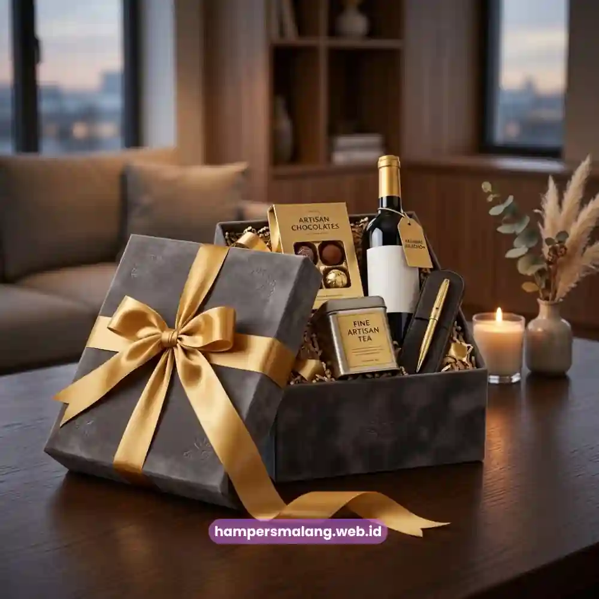
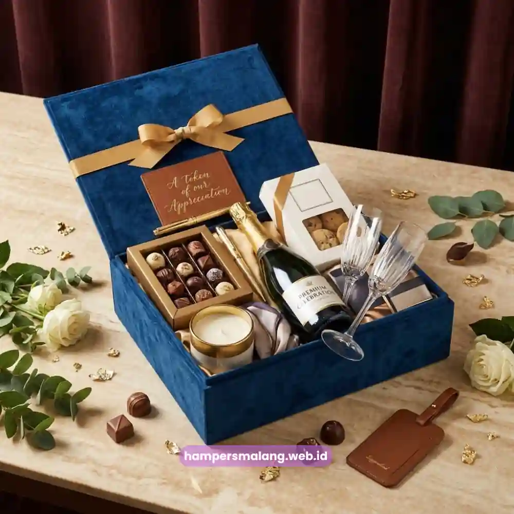

Kapan waktu yang paling tepat mengirim hampers ucapan terima kasih kepada klien?
Waktu paling ideal adalah saat terjadi momen bermakna dalam perjalanan kerja sama, seperti penyelesaian proyek, perpanjangan kontrak, hari besar keagamaan, atau pergantian tahun.
Ketepatan momen inilah yang membuat hampers terasa tulus, bukan sekadar rutinitas formal tanpa makna.
Banyak perusahaan masih mengirimkan hampers klien secara acak tanpa mempertimbangkan konteks hubungan bisnis yang sedang berlangsung.
Padahal, momentum pengiriman memiliki pengaruh besar terhadap bagaimana pesan apresiasi tersebut diterima.
Hampers yang dikirim pada waktu yang tepat akan lebih mudah diingat dan dihargai dibandingkan hampers yang dikirim tanpa alasan yang jelas.
Mengapa Momen Pengiriman Hampers Sangat Menentukan Kesan yang Tercipta?
Momen pengiriman menentukan konteks emosional yang menyertai hampers tersebut.
Hampers yang dikirim tepat setelah keberhasilan sebuah proyek, misalnya, akan langsung dikaitkan dengan pencapaian bersama, sehingga kesan positif yang tercipta jauh lebih kuat dibandingkan pengiriman pada waktu netral tanpa peristiwa penting.
Selain aspek emosional, ketepatan momen juga mencerminkan seberapa jauh perusahaan memperhatikan perjalanan kerja sama dengan klien tersebut.
Klien akan merasa bahwa perusahaan benar-benar mengikuti perkembangan hubungan bisnis, bukan hanya mengirimkan hadiah sebagai kewajiban administratif semata.
Baca Juga: 9 Ide Hampers Relasi Bisnis yang Elegan dan Profesional
Momen Penyelesaian Proyek atau Pencapaian Target Bersama
Penyelesaian proyek besar merupakan salah satu momen paling relevan untuk mengirimkan hampers apresiasi kepada klien.
Pada tahap ini, hubungan kerja sama biasanya berada pada puncak intensitas kolaborasi, sehingga ucapan terima kasih terasa sangat kontekstual dan bermakna.
Hampers yang dikirim pada momen ini sebaiknya menonjolkan kesan perayaan atas pencapaian bersama, misalnya dengan kartu ucapan yang menyebutkan pencapaian spesifik yang telah diraih.
Pendekatan personal semacam ini membuat klien merasa dihargai secara individual, bukan sekadar menerima hadiah generik yang dikirim ke banyak pihak sekaligus.

Baca Juga: Kapan Waktu Tepat Memberikan Hampers untuk Relasi Bisnis?
Momen Perpanjangan Kontrak atau Kerja Sama Jangka Panjang
Perpanjangan kontrak menandakan kepercayaan klien terhadap kualitas kerja perusahaan, sehingga momen ini layak dirayakan dengan pengiriman hampers sebagai bentuk penghargaan atas keputusan tersebut.
Hampers pada momen ini idealnya mencerminkan kesan keberlanjutan dan komitmen jangka panjang antara kedua belah pihak.
Sebuah laporan tren corporate gifting tahun 2023 mencatat bahwa perusahaan yang secara konsisten memberikan apresiasi pada setiap fase penting kerja sama memiliki tingkat perpanjangan kontrak yang lebih tinggi dibandingkan perusahaan yang tidak menerapkan pendekatan serupa.
Data ini menegaskan bahwa hampers bukan sekadar formalitas, melainkan bagian dari strategi mempertahankan hubungan bisnis jangka panjang.
Momen Hari Raya dan Perayaan Nasional
Hari raya keagamaan seperti Idulfitri, Natal, dan momen perayaan nasional lainnya menjadi waktu yang paling umum digunakan untuk mengirimkan hampers klien.
Momen ini bersifat universal sehingga cocok untuk hampir seluruh segmen klien tanpa perlu mempertimbangkan konteks proyek tertentu.
Pada momen hari raya, penting untuk memperhatikan kesesuaian isi hampers dengan nilai budaya dan keagamaan yang dianut oleh klien penerima.
Pemilihan produk yang netral dan inklusif akan membuat hampers dapat diterima dengan baik oleh berbagai kalangan tanpa menimbulkan kesalahpahaman.
Momen Akhir Tahun sebagai Refleksi Kerja Sama
Akhir tahun merupakan momen strategis untuk mengirimkan hampers sebagai bentuk refleksi atas seluruh perjalanan kerja sama sepanjang tahun tersebut.
Momen ini juga sering dimanfaatkan perusahaan untuk membuka peluang kolaborasi baru di tahun berikutnya melalui pendekatan yang lebih personal.
Hampers akhir tahun umumnya dirancang dengan konsep yang lebih mewah dibandingkan momen lainnya, mengingat momen ini menjadi puncak apresiasi tahunan yang mencerminkan keseluruhan nilai kerja sama yang telah terjalin selama dua belas bulan terakhir.
Bagaimana Menentukan Prioritas Momen jika Anggaran Terbatas?
Ketika anggaran perusahaan terbatas, penting untuk menentukan prioritas momen yang paling relevan dengan strategi bisnis yang sedang dijalankan.
Momen penyelesaian proyek besar dan akhir tahun umumnya menjadi prioritas utama karena memiliki dampak emosional dan strategis paling tinggi terhadap hubungan dengan klien.
Perusahaan juga dapat mempertimbangkan segmentasi klien berdasarkan nilai kontrak atau intensitas kerja sama, sehingga alokasi anggaran hampers dapat difokuskan pada klien-klien prioritas tanpa mengurangi kualitas apresiasi yang diberikan.
Setelah menentukan momen yang tepat, langkah selanjutnya adalah memastikan hampers yang dikirimkan benar-benar mencerminkan kualitas dan keseriusan perusahaan Anda.
Hampers Malang siap membantu merancang hampers ucapan terima kasih klien yang disesuaikan dengan setiap momen penting dalam perjalanan bisnis Anda, lengkap dengan personalisasi kemasan dan jadwal pengiriman yang fleksibel.
Menentukan momen yang tepat merupakan faktor kunci agar hampers ucapan terima kasih klien memberikan dampak maksimal terhadap hubungan bisnis jangka panjang.
Dengan memahami konteks penyelesaian proyek, perpanjangan kontrak, hari raya, dan akhir tahun, perusahaan dapat merancang strategi pengiriman hampers yang lebih terarah dan bermakna.
Wujudkan momen apresiasi terbaik untuk klien Anda bersama Hampers Malang, mitra terpercaya untuk hampers korporat yang berkesan.
Tanya Jawab Seputar Momen Hampers Klien
Tidak harus setiap tahun, namun pengiriman rutin pada momen strategis seperti akhir tahun dapat memperkuat hubungan jangka panjang dengan klien.
Ya, momen tersebut dapat menjadi kesempatan baik untuk mengirimkan hampers sebagai bentuk perhatian khusus terhadap perjalanan bisnis klien.
Hampers tetap dapat dikirimkan pada momen penyelesaian tahap awal proyek sebagai bentuk apresiasi atas kepercayaan yang diberikan sejak awal kerja sama.

Butuh Hampers Klien Eksklusif?
Dapatkan Penawaran Terbaik untuk Hampers Perusahaan Anda.
Ditulis oleh Tim Maroon Souvenir
Ahli dalam perancangan hampers dan corporate gift untuk perusahaan. Membantu klien memberikan kesan mendalam melalui hadiah berkualitas.